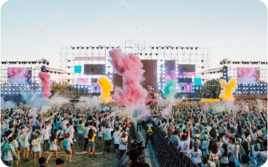

Legenda:
Pista Premium
Pista Comum
Cadeiras Térreo
Cadeiras Superiores
Rampas
Mais detalhes sobre os setores:

Pista
Pista convencional, atendida pelos bares e banheiros das laterais do estádio. Espaço amplo, com local para sentar e descansar. Separada da pista premium por uma grade.

Pista Premium
Pista mais próxima do palco, com acesso muito próximo a banheiros e bares num raio de 100m. Todas as pessoas idosas e/ou com deficiência têm direito a acesso gratuito a essa área.

Cadeiras
Opção de cadeiras térreas ou elevadas. Acesso próximo a banheiros e bares, visão um pouco elevada em relação às pistas.